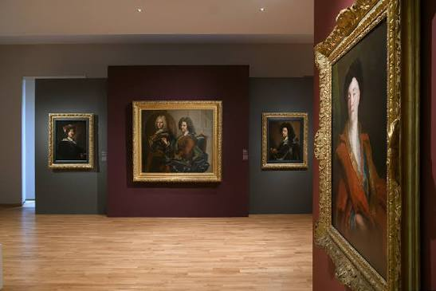

Musée
Hyacinthe Rigaud


⟹ Musées Emblématiques ⟸
Près de deux siècles d’histoire muséale. Le musée d’art Hyacinthe Rigaud trouve son origine dans le musée des Beaux-Arts de Perpignan, ouvert au public en 1833 dans les bâtiments de l’ancienne université. Comme beaucoup de musées municipaux créés au XIXe siècle, il se constitue d’abord à partir de collections particulières, puis s’enrichit grâce aux dons, aux acquisitions et aux dépôts de l’État sous le Second Empire et la Troisième République.

En 1908, Jules Pams et Jules Escarguel fondent la première association des Amis du Musée de Perpignan. Leur action favorise l’arrivée de nombreux dépôts de l’État, souvent des œuvres acquises aux Salons officiels. Le musée élargit progressivement son rôle : il ne s’agit plus seulement de conserver des tableaux, mais de construire une histoire artistique capable de relier Perpignan aux grands courants de l’art français tout en affirmant la richesse culturelle du Roussillon.
Après la Seconde Guerre mondiale, cette identité régionale prend une importance nouvelle. En 1949 apparaît la volonté de mettre davantage en valeur la peinture moderne et les artistes liés au Roussillon. Un éphémère musée du Roussillon est installé dans les salons de l’hôtel Pams. Il ferme en 1953 au profit d’un musée entièrement repensé, qui prend alors le nom d’Hyacinthe Rigaud, le grand portraitiste né à Perpignan en 1659 et devenu l’un des peintres les plus célèbres du règne de Louis XIV.
Le choix de ce nom affirme une filiation prestigieuse. Rigaud, reçu à l’Académie royale et portraitiste des souverains, princes et grands personnages de son temps, symbolise le rayonnement d’un artiste catalan devenu figure majeure de la peinture européenne. L’État accompagne la nouvelle orientation du musée par le dépôt de son célèbre Autoportrait au turban, qui devient l’une des œuvres phares de l’institution.
À partir des années 1970, le musée développe également une politique de médiation novatrice : un musée pour enfants est créé en 1973, préfigurant la structuration d’un véritable service éducatif. Mais les collections et les ambitions de l’établissement rendent bientôt les locaux de l’ancienne université insuffisants. En 1979, la Ville décide donc d’installer le musée dans l’hôtel de Lazerme, demeure historique du centre de Perpignan récemment acquise.
Les collections continuent ensuite de s’enrichir par des apports majeurs. En 1994, le legs de Maître Rey fait entrer 210 petits formats dans les collections. En 1996, une souscription publique permet l’acquisition du Saint Pierre de Hyacinthe Rigaud. En 2001, la donation Pierre Daura, consentie à la Ville par sa fille Martha, permet d’ouvrir de nouveaux espaces et d’élargir encore le panorama de l’art moderne.
La grande métamorphose intervient au XXIe siècle. Afin de donner au musée l’espace correspondant à l’importance de ses fonds, un vaste chantier réunit l’hôtel de Lazerme et l’hôtel de Mailly, deux hôtels particuliers dont l’histoire remonte à l’époque moderne et qui témoignent de la vie aristocratique et intellectuelle de Perpignan. Après plusieurs années de travaux, le musée rénové et considérablement agrandi rouvre en juin 2017.
Le nouvel établissement déploie désormais ses collections sur environ 1 400 m² et propose un parcours allant du gothique catalan à la création contemporaine. Cette amplitude chronologique permet de raconter plusieurs siècles d’histoire artistique à Perpignan : retables médiévaux, peinture baroque autour de Rigaud, artistes modernes liés au Roussillon — parmi lesquels Maillol, Dufy ou Picasso — puis création contemporaine.
Le musée d’art Hyacinthe Rigaud est donc l’héritier d’une histoire commencée en 1833 et constamment renouvelée par les collectionneurs, les artistes, les donateurs et la Ville. Son installation dans les hôtels de Lazerme et de Mailly associe aujourd’hui patrimoine architectural et patrimoine artistique, faisant du musée un véritable récit de Perpignan à travers les arts.
Né à Perpignan en 1659, Hyacinthe Rigaud s'impose à la cour de Versailles comme le portraitiste officiel de la monarchie française. Son célèbre portrait en pied de Louis XIV en habit de sacre, aujourd'hui conservé au Louvre, a fixé pour l'histoire l'image du Roi-Soleil.
Un musée où l'histoire de l'art se mêle à la perfection aux richesses du patrimoine catalan.
— À propos du musée d'art Hyacinthe RigaudEn donnant son nom au musée de sa ville natale, Perpignan célèbre un artiste dont le talent a traversé les frontières du royaume, tout en revendiquant un ancrage catalan affirmé, visible jusque dans les collections d'art gothique et les dialogues tissés avec Barcelone à travers les expositions temporaires.
Le Castillet et la Casa Pairal, à quelques rues, pour prolonger la découverte du patrimoine catalan de Perpignan.
Palais des rois de Majorque, forteresse royale du XIIIe siècle dominant la ville depuis la citadelle.
Cathédrale Saint-Jean-Baptiste, joyau du gothique méridional au cœur du centre historique.
La Loge de Mer et les ruelles du centre ancien, pour flâner entre commerces catalans et architecture médiévale.